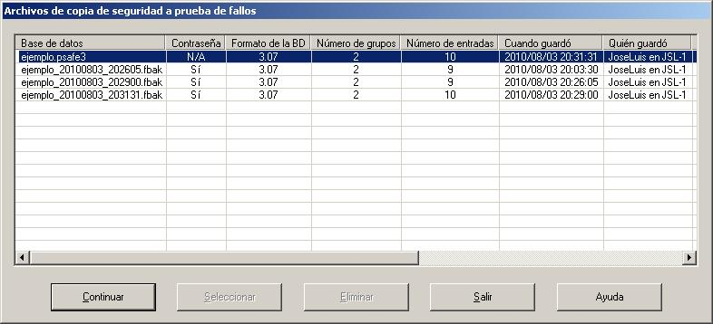

Cuando PasswordSafe finaliza normalmente, se te preguntará si hay cambios no guardados en la base de datos. Sin embargo, si cierra la sesión la sesión de Windows, apaga o reiniciar su PC, entonces PasswordSafe pueden no tener la oportunidad de preguntarle (el comportamiento exacto depende del tipo de cierre y la versión de Windows).
En este caso, PasswordSafe intentará realizar una "copia de seguridad a prueba de fallos" (extensión de archivo 'fbak'). Se creará en el mismo directorio que la base de datos actualmente abierta. La base de datos actual y sus "copias de seguridad periódicas" no serán alteradas.
Cuando la base de datos original se vuelve a abrir, PasswordSafe comprobará la existencia de cualquier archivo de copia de seguridad a prueba de fallos y, si lo encuentra, se mostrará un cuadro de diálogo similar al de abajo.
La primera fila es la base de datos especificada seguido de información general al respecto (el mismo que figura en el cuadro de diálogo Propiedades en el menú Archivo). Seguidamente aparece el archivo (o archivos) de copia de seguridad a prueba de fallos. Si se puede abrir con la misma contraseña que la base de datos principal, sus propiedades también se muestran. Si tienen una palabra de paso diferente o no es una base de datos válida, entonces un 'No' se muestra en la columna de la frase de paso y se indican las propiedades.
Tus opciones son las siguientes:
Sugerencias:
Nota: No hay nada que NINGUNA aplicación pueda hacer para guardar la información si se apaga el PC, se queda sin batería o el procesador, el disco duro o cualquier otro componente falla. Al igual que con todos tus datos importantes, debes hacer una copia de seguridad a otro medio regularmente. Este podría ser un pen drive USB, discos duros externos, unidades de red, CD o DVD, etc. Estas copias de seguridad se deben almacenar en un lugar seguro.